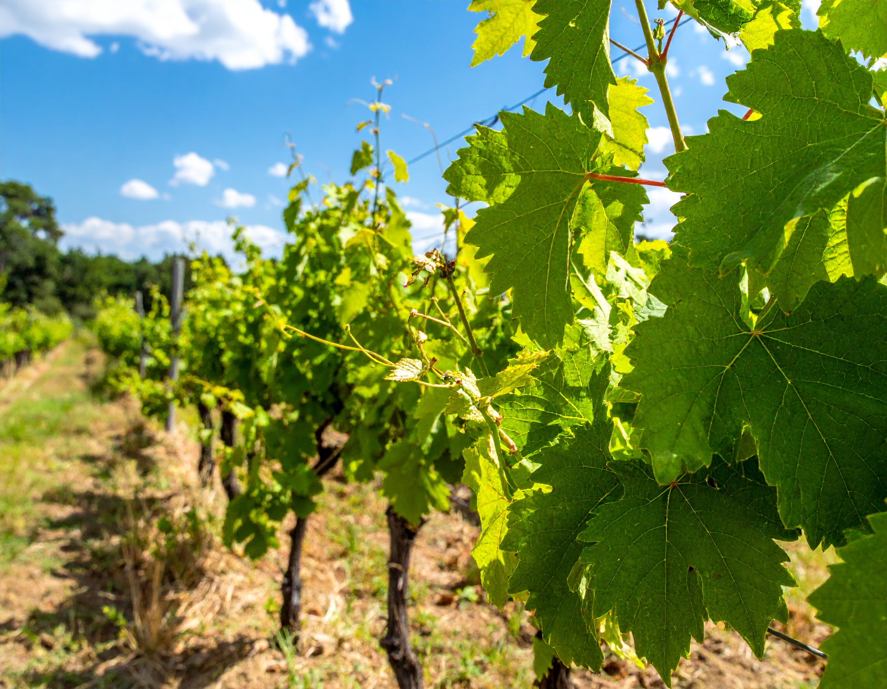
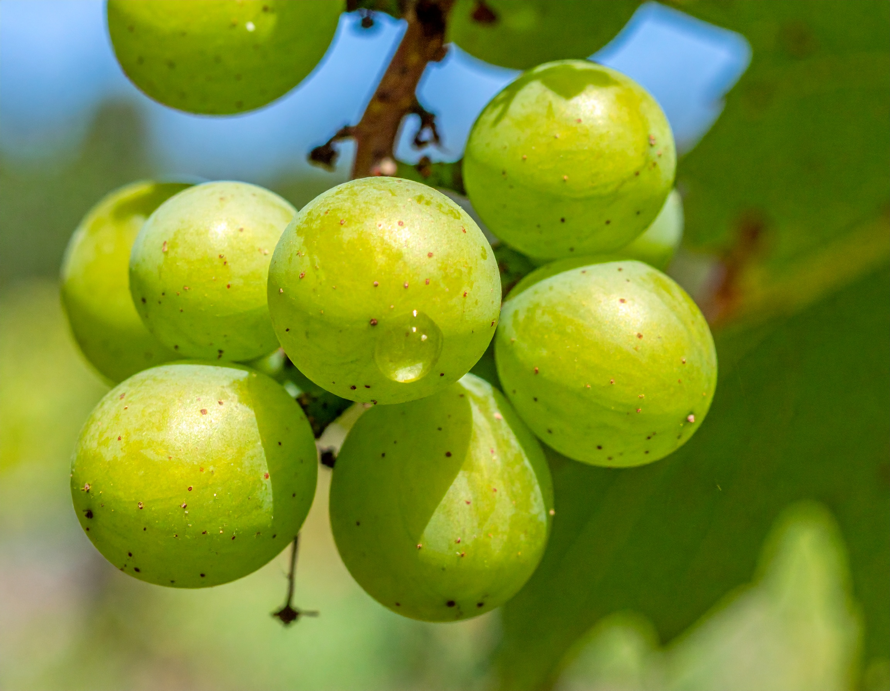
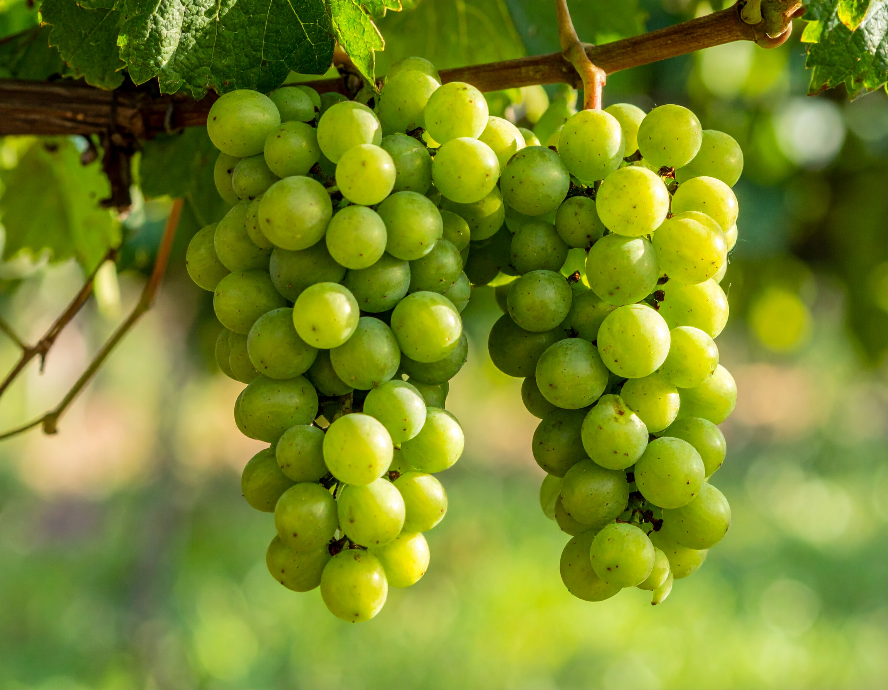

Druer

SOLARIS
Hjertet i vores hvidvine
Solaris er den primære drue hos Havblink Hvidvin – en robust, grøn druesort, der trives særligt godt i det sydfynske klima.
en blev udviklet i Tyskland i 1975 med det formål at skabe en drue, der kunne modnes tidligt, klare sig i kølige egne og samtidig være modstandsdygtig over for sygdomme.
Det gør Solaris til en ideel partner for dansk vinproduktion – og for vores økologiske tilgang.
Druen er særligt kendt for sin evne til at modne hurtigt og opnå et højt sukkerindhold, selv i år med begrænset sol.
Samtidig bevarer den en frisk syre, hvilket giver mulighed for vine med både fylde og sprødhed.
I smagen byder Solaris på florale og frugtige nuancer – fra citrus og stikkelsbær til melon, ananas og hyldeblomst – alt afhængigt af mark, årgang og vinificering.
 Men Solaris er mere end bare smag: Dens naturlige modstandsdygtighed mod svampesygdomme betyder, at vi kan minimere brugen af sprøjtemidler og pleje vores marker med nænsomhed.
Det gør den til en bæredygtig drue – og til en vigtig del af vores vision om at producere dansk hvidvin med omtanke.
For os er Solaris ikke blot en drue, men selve fundamentet for vinene fra Havblink: En forening af sted, håndværk og naturens muligheder.
JOHANITTER
Den stille karakter
Johanitter er en grøn druesort med tyske rødder, som trives fint i køligere klimaer som det sydfynske.
Den er nært beslægtet med Riesling og bærer mange af de samme kvaliteter: en frisk syre, fine citrusnoter og let krydrede undertoner.
Hos Havblink Hvidvin bruger vi Johanitter i udvalgte cuvéer, hvor den tilfører struktur, balance og et strejf af elegance.
Dens naturlige modstandsdygtighed gør den velegnet til økologisk dyrkning – og dens smagsprofil komplementerer Solaris smukt.
SIEGERREBE
Aromaens drue
Siegerrebe er en aromatisk, tidligt modnende drue med rødder i Tyskland.
Den kendes for sine intense dufte af muskat, rosenblade og tropisk frugt.
Hos Havblink Hvidvin bruger vi den i små mængder til særlige cuvéer, hvor den tilfører elegance og aromatisk dybde.
En drue med karakter – både i marken og i glasset.